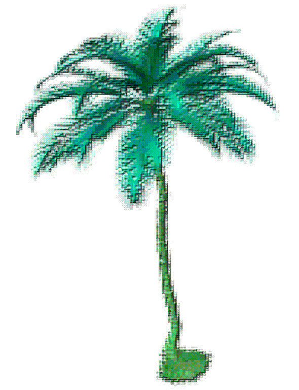
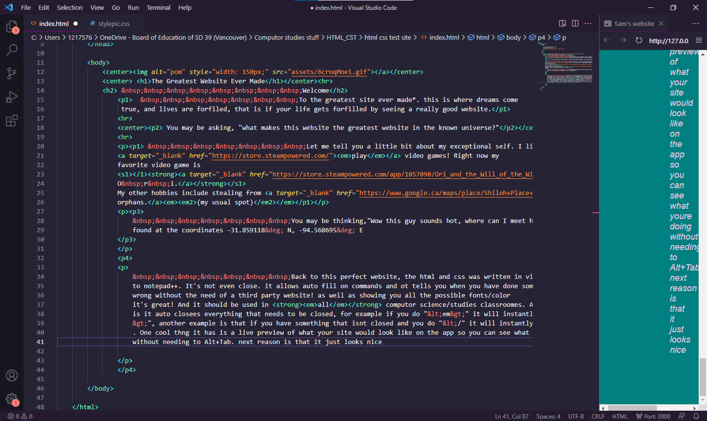

The Greatest Website Ever Made
Welcome
To the greatest site ever made*. this is where dreams come
true, and lives are forfiled, that is if your life gets forfilled by seeing a really good website.
You may be asking, "what makes this website the greatest website in the known universe?"
Let me tell you a little bit about my exceptional self. I like to
play video games! Right now my
favorite video game is
O r i.
My other hobbies include stealing from
orphans.(my usual spot)
You may be thinking,"Wow this guy sounds hot, where can I meet him?" Well I'm glad you asked, I can be
found at the coordinates -31.859118° N, -94.568695° E
Back to this perfect website, the html and css was written in visual studio code. The supirior software
to notepad++. It's not even close. it allows auto fill on commands and ot tells you when you have done something
wrong without the need of a third party website! as well as showing you all the possible fonts/color
it's great! And it should be used in all computor science/studies classroomes. Asnother great thinking
is it auto closees everything that needs to be closed, for example if you do "<em>" it will instantly do "</em
>", another example is that if you have something that isnt closed and you do "</" it will instantly close it
. One cool thng it has is a live preview of what your site would look like on the app so you can see what youre doing
without needing to Alt+Tab. next reason is that it just looks nice (low resolution because photo shrunk, fix by opening in a new
tab). 
Why would you use anything else! It's faster, easier, looks pretty, and fully customizeable with in app extensions!